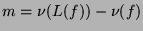

Usage
orderDrop N
Signature
orderDrop: % Integer
| Parameter | Type | Description |
|---|---|---|
| N | % | a Newton polygon |
Description
When Rxy is a LinearOrdinaryDifferentialOperatorCategory over Rx, then orderDrop(N) returns  for a generic f for which cancellation does not occur.
Remarks
This function is only meaningful for differential Newton polygons.